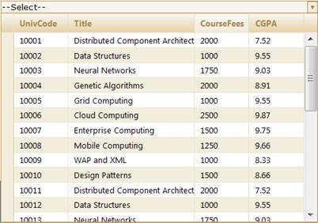
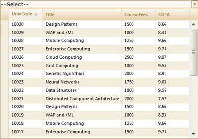

To sort in server mode using MultiColumnDropDownModel:
1. Create a model in the application. Refer to Getting Started>Adding a Model to the Application.
2. Create the MultiColumnDropDown control in the view.
|
[View]
<%=Html.Syncfusion().MultiColumnDropDown<Student>("Multidropdown",(MultiColumnDropDownModel) ViewData["dropdown"]) %> |
|
View [cshtml] @(new HtmlString(Html.Syncfusion().MultiColumnDropDown<Student>("Multidropdown",(MultiColumnDropDownModel) ViewData["dropdown"]).ToString())) |
Create an instance for MultiColumnDropDownModel and assign Datasource to the model.
|
Controller // Create instance to MultiColumnDropDownModel and assign properties. MultiColumnDropDownModel dropdown = new MultiColumnDropDownModel() { Datasource = new StudentDataContext().JSONStudent.Skip(0).Take(30).ToList(), Text = "--Select--", DisplayExpression = new int[3] { 2, 3, 5 }, Width = 500 };
|
Enable/disable the sorting feature using the AllowSorting property.
|
Controller
// Create instance to MultiColumnDropDownModel and assign properties. MultiColumnDropDownModel dropdown = new MultiColumnDropDownModel() { Datasource = new StudentDataContext().JSONStudent.Skip(0).Take(30).ToList(), Text = "--Select--", DisplayExpression = new int[3] { 2, 3, 5 }, Width = 500, AllowSorting = true };
|
Pass the model to View using ViewData().
|
Controller // Pass the MultiColumnDropDownModel to the view using ViewData() ViewData["dropdown"] = dropdown; |
In order to work with sorting actions, create a Post method for Index actions and bind the data source to MultiColumnDropDown as shown in the following code sample.
|
Controller
[AcceptVerbs(HttpVerbs.Post)] public ActionResult Index (PagingParams args) { IEnumerable data =new StudentDataContext().AutoFormatStudent.Take(20); return data.GridActions<Student>(); } |
Run the application. The MultiColumnDropDown control will appear as shown below.

Figure 322: Sorting Enabled MultiColumnDropDown Control

Figure 323: “UnivCode” Column Sorted by Descending Order